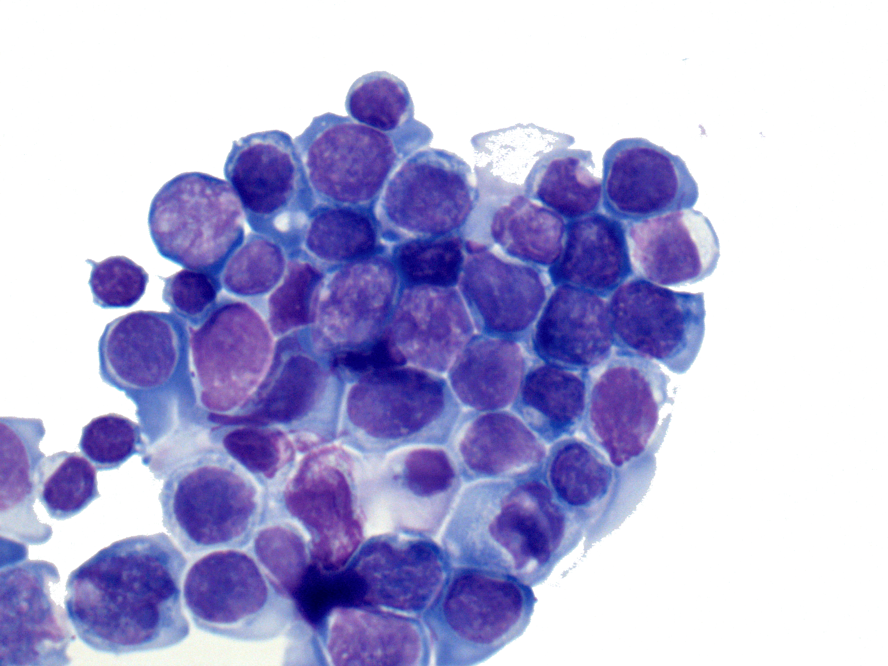

Welcome to hemaClass.org
This homepage provides classification of DLBCL patients according to various classifications algorithms based on gene expression profiles (GEP). The server currently supports gene expressions profiled by the Affymetrix GeneChip Human Genome U133 Plus 2.0 Array.
|
The current classification schemes build are:
|
 |
The classification schemes on this web server, and the possibility of running the web server locally, are made available as an
Disclaimer: The developers of hemaClass disclaim against responsibility for the effects of their advice. For instance we neither accept liability for the classifications performed, nor for the consequences of any actions taken on the basis of the information provided.
Department of Haematology, Aalborg University Hospital, 2015-01-28